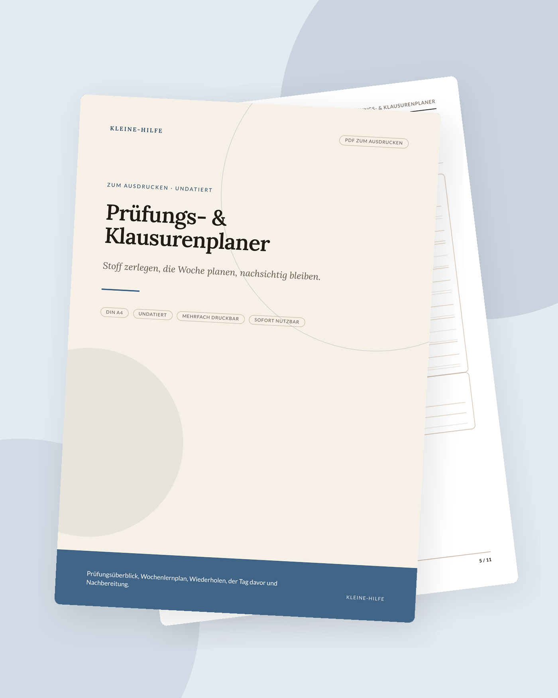

Start · Ratgeber · Lernplan für Prüfungen
Schule & Lernen
Lernplan für Prüfungen
Ein guter Lernplan macht den Stoff nicht kleiner, aber greifbarer. Er sagt dir, was in dieser Woche dran ist – und was bewusst noch warten darf, damit der Tag nicht unter einer undeutlichen Restmenge zusammenbricht.

Prüfungsphasen erzeugen leicht das Gefühl, jederzeit „eigentlich lernen“ zu müssen – und deshalb nirgends richtig anzufangen. Ein Lernplan nimmt diesem Gefühl die Unbestimmtheit. Er ist keine Garantie für eine bestimmte Note und kein Ersatz für den Unterricht. Er ist ein sichtbarer Weg durch den Stoff, der noch vor dir liegt.
Vom Termin rückwärts denken
Schreibe zuerst alle festen Daten auf: Prüfungstag, Abgaben, letzte Veranstaltungen, Arbeit, Familiäres, das nicht verschiebbar ist. Von dort rechnest du rückwärts, nicht vorwärts aus einem hoffnungsvollen Montag. So siehst du, wie viele echte Lerntage zur Verfügung stehen – nicht, wie viele du dir wünschen würdest.
Markiere außerdem Tage, die nur halb zählen: Reisetage, Schichten, Feiern, Tage nach Nachtdiensten. Ein Plan, der so tut, als hättest du drei ungestörte Stunden an einem solchen Tag, wird unglaubwürdig und dann ignoriert. Der Prüfungs- und Klausurenplaner ist genau für diese Übersicht gedacht: Termine, Stoffverteilung, Wochenblick.
Stoff in ehrliche Portionen teilen
„Kapitel 4 bis 9“ ist noch kein Arbeitspaket. Besser sind Einheiten, die du in einem Block tatsächlich abschließen kannst: ein Unterkapitel, ein Aufgabentyp, ein Urteil, zwölf Vokabeln im Kontext, eine alte Klausuraufgabe. Schreibe zu jeder Einheit auf, woran du merkst, dass sie „erledigt“ ist – zum Beispiel: „kann die Aufgabe ohne Lösungsskizze rechnen“ oder „kann den Begriff in eigenen Worten erklären“.
Verteile die Einheiten so, dass schwieriger oder ungeliebter Stoff nicht ausschließlich am Ende landet. Mische Wiederholungen ein. Ein Thema, das du früh bearbeitest und kurz vor der Prüfung noch einmal aktiv abrufst, sitzt in der Regel besser als ein Thema, das du einmal lange liest und dann wochenlang nicht mehr anfasst.
Für den laufenden Schulalltag neben Klassenarbeiten hilft der Lernplaner Schule. Im Studium übernimmt der Studienplaner den längeren Atem über das Semester.
Lieber aktiv üben als nur lesen
Lesen und Markieren fühlen sich nach Arbeit an, prüfen aber kaum, ob der Stoff verfügbar ist. Tragfähiger sind aktive Formen, die in der Lernforschung seit Langem empfohlen werden: aus dem Gedächtnis wiedergeben, Fragen beantworten, Aufgaben rechnen, sich selbst oder anderen den Gedankengang erklären, Karteikarten mit eigenen Worten nutzen, alte Prüfungen unter Zeitdruck versuchen.
Das muss nicht kompliziert klingen. Schon das Zuklappen des Buchs und die Frage „Was war der Kern dieses Abschnitts?“ ändern die Qualität der Stunde. Plane solche Abruf-Momente fest ein, nicht nur „wenn noch Zeit ist“. Zeit zum Üben entsteht selten von selbst am Ende eines langen Lesetags.
Für Referate und Präsentationen gelten dieselben Schritte, nur mit einem sichtbaren Endprodukt. Der Referats- und Präsentationsplaner zerlegt genau diesen Weg in überschaubare Stücke.
Die Woche und der einzelne Block
Ein Lernplan auf Monatsebene bleibt abstrakt, wenn die Woche ihn nicht herunterbricht. Lege fest, an welchen Tagen welche Einheiten dran sind, und wie lang der Block maximal dauert. Ein klarer Anfang und ein klares Ende schützen vor dem Gefühl, der restliche Tag gehöre nun komplett der Prüfung.
In einem Block gilt ein Thema. Neue To-dos und Sorgen kommen auf einen Parkplatz, nicht in denselben Block. Wer leicht abschweift, kann mit einem einfachen Timer oder dem Zeitblocker & Fokusplaner arbeiten: eine Sache, eine überschaubare Spanne, dann eine echte Pause.
Puffer, Pausen und Leben daneben
Baue Puffertage ein, bevor du sie brauchst. Krankheit, ein undurchschaubares Kapitel, ein Thema, das länger dauert als gedacht: Ohne Puffer verschiebt sich alles und der Plan zerbricht. Mit Puffer bleibt er glaubwürdig.
Pausen sind Teil der Vorbereitung, nicht die Belohnung danach. Schlaf, Bewegung und kurze Abschnitte ohne Bildschirm helfen dem Behalten mehr als eine weitere übermüdete Stunde, in der nur noch Zeilen rutschen. Ein Lernplan, der keine Mahlzeiten und keine Wege enthält, ist ein Plan für eine Person, die so nicht lebt.
Schule, Studium, ADHS
In der Schule stehen oft mehrere Fächer parallel. Dann braucht der Plan nicht mehr Stunden, sondern klarere Reihenfolgen: Was ist zeitlich zuerst dran, was lässt sich in kürzeren Fenstern erledigen, was braucht einen längeren ruhigen Block? Im Studium kommen oft Abgaben und Prüfungen in Wellen; hier lohnt sich ein Blick über mehrere Wochen, nicht nur auf die nächste Klausur.
Wer mit ADHS oder einem sehr vollen Kopf lernt, profitiert besonders von kurzen Einheiten, sichtbaren nächsten Schritten und wenig Reiz auf dem Blatt. Der ADHS-Studienplaner nimmt genau das auf. Auch hier gilt: Ein Planer organisiert die Arbeit. Er ersetzt keine Nachteilsausgleiche, keine Beratung und keine medizinische Unterstützung, falls du sie brauchst.
Wenn der Plan am Mittwoch schon nicht mehr zur Realität passt, ist das ein Grund, ihn zu kürzen – nicht, die Vorbereitung für gescheitert zu erklären. Ein angepasster Plan, den du weiter benutzt, ist mehr wert als ein ehrgeiziger, den du vermeidest.
Passende Planer zum Ausdrucken
Die Artikel bleiben auch ohne Kauf nützlich. Wenn du die Schritte gerne auf Papier festhältst, findest du hier ruhige Vorlagen dazu.


Weitere Ratgeber
- ADHS im Alltag organisierenDrei Prioritäten, ein Gedankenparkplatz und Routinen, die tragen, statt zu erziehen.
- Haushaltsbuch führen: eine AnleitungFixkosten zuerst, den Monat in Euro planen und in kurzer Zeit abschließen – ohne schlechtes Gewissen.
- Umschlagmethode erklärtCash Stuffing und Budget-Umschläge: Töpfe befüllen, Ausgaben notieren, Reste übertragen.
- Mental Load reduzierenUnsichtbare Aufgaben sammeln, sortieren und teilen – ohne große Debatte am Anfang.
- Meal Prep für AnfängerZuerst planen und Vorräte prüfen, dann kochen. Ein Restetag gehört dazu.
- Gewohnheiten aufbauenWenn-Dann-Pläne, Gewohnheiten an Bestehendes hängen und Fortschritt sichtbar machen – ohne Punktekonto.
- Neujahrsvorsätze durchhaltenWenige konkrete Vorhaben, in Wochen übersetzt, mit einem undatierten Blick aufs Jahr.